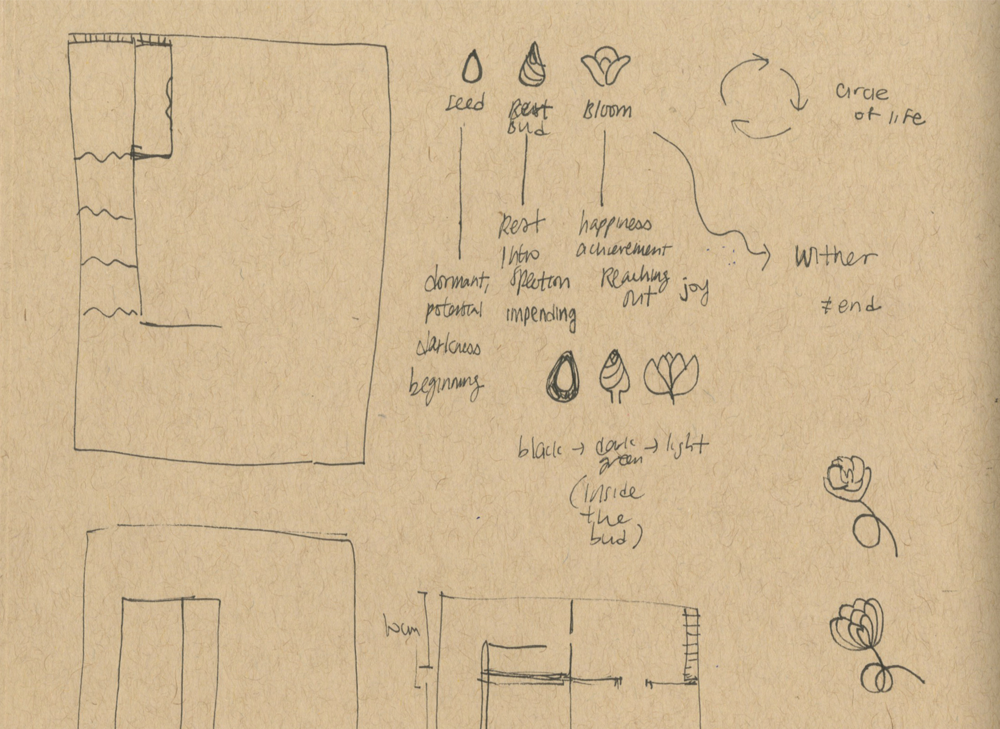

If I have an unlimited budget, I would like to bring the space to real life with live plants and smart mirror displays.
The project is based on the flower cycle and how it compares to our lives. The seed endures the darkness for a long time, but it holds tremendous potential. The bud reflects within itself and prepares to join the world. Finally, the flower blooms and brings delight to everyone. Although the bloom is short and sweet, withering is not the end because it is a cycle.
Back to Project

The space includes soft carpets (to be experienced without shoes), dark green velvet curtains, and round-edged furniture to create a calming and safe environment. Below is a model of how the space and the ceremony works in conjunction.

Upon entering the Reception Hall, you are invited to contemplate as an individual and as a community on what self-love truly means. Printed materials are available for study in the shared area.
The invitation card holds information about the private self-guided ceremony modeled after the western wedding ceremony and vows of self-love to recite and sign. The three sections of the ceremony of self-love mirror three stages of the flower life cycle as the metaphor of personal growth.


Once you’re ready to proceed with the ceremony, the first step is to walk the Aisle. At first you walk alone in complete darkness, until the light gradually comes back on as you ascend to the next stage.

In the Ceremony Room, you renew the vows of self-love in all of your presence, with your past behind you and future in front of you within the double mirrors. This will be an entirely private moment to yourself to practice mindfulness.


When you exit the Ceremony Room, you step back into the Reception Hall. Here you tie a flower knot on the rope to mark this celebratory moment in your life and show your support for self-love.